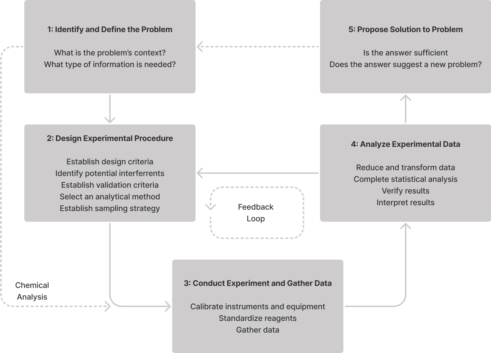
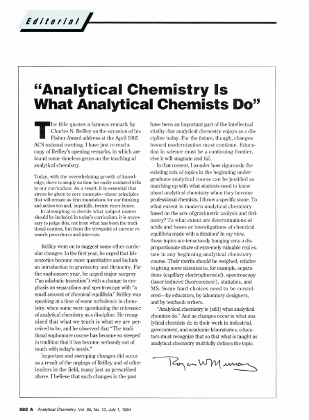
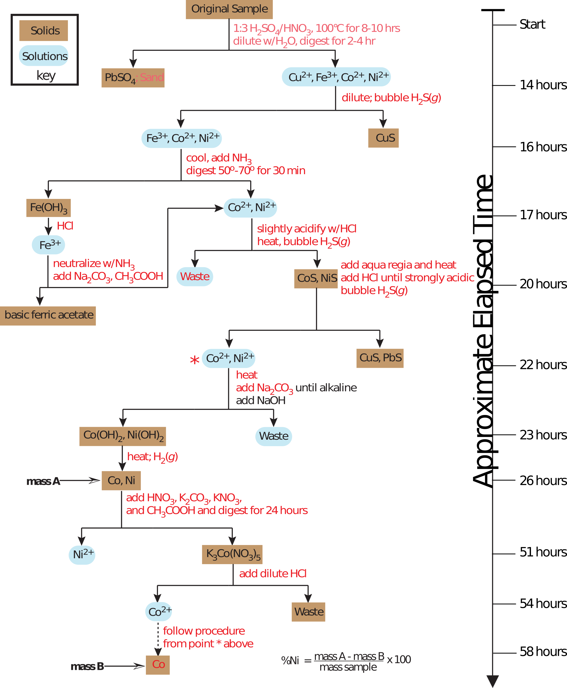
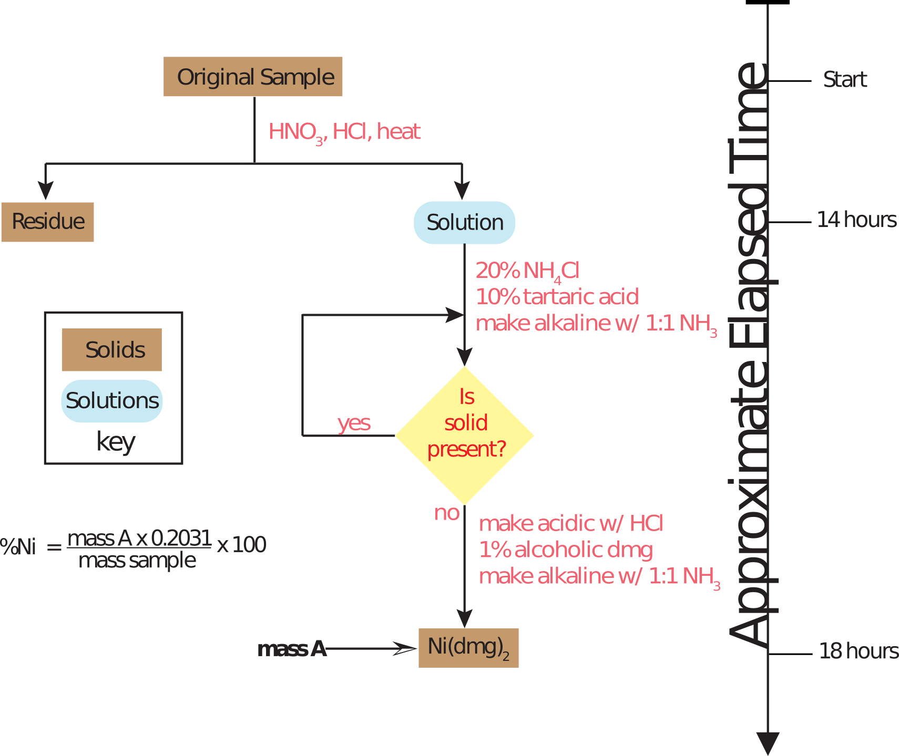

layout: true .footer[ - <div class="tooltip"><a href="/"><i class="fas fa-home"></i></a> <span class="tooltiptext">Go to C370 Main Page</span></div> - <div class="tooltip"><a href="/lecture-slides"><i class="fas fa-chalkboard-teacher"></i></a><span class="tooltiptext">Go to Lecture List</span></div> - <div class="tooltip"><i class="fas fa-question"></i><span class="tooltiptext">Press <kbd>Shift</Kbd> + <kbd>?</kbd> for Navigation Tips!</span></div> ] --- <!-- <h2 style = "text-align: left; font-weight: bold; margin-left: 40px; font-size: 54px; margin-top: 10px;">Environmental applications of ultratrace spectroscopy</h2> --> <!-- <h2 style = "text-align: left; font-weight: bold; margin-left: 40px; font-size: 54px; margin-top: 10px;">Ultratrace Spectroscopy for Environmental Analysis</h2> --> <h2 style = "text-align: left; font-weight: bold; margin-left: 40px; font-size: 54px; margin-top: 50px;">An Analytical Perspective</h2> <!-- <h3 style = "text-align: left; font-weight: thin; margin-left: 40px; font-size: 48px;">Al Fischer, PhD</h3> --> <center>  </center> --- # Branches of Chemistry (5) 1. Organic 2. Inorganic 3. Physical 4. Analytical 5. Biochemistry -- What about in other branches??? Forensic? Environmental? Theoretical? --- # What is Analytical Chemistry? -- > Analytical chemistry is what analytical chemists do. > > *C.N. Reilly* --- # What is Analytical Chemistry? <center>  </center> <!-- class: img-full --> <!-- # questions? --> <!-- <img src="./img/chapter-1/wcu-tt_mp-case-montage.png", style="height: 425px;"> --> <!-- <img src="./img/chapter-1/wcu-tt_mp-case-open-no-lid.png", style="height: 425px;"> --> <!-- <img src="./img/chapter-1/wcu-tt_mp-dark.jpg"> --> --- # How do we "see" the world? --- # Example: Detecting Ni <center>  </center> --- # Example: An improved method <center>  </center> --- # Example: A modern method <center> <img src="https://www.wcu.edu/WebGraphics/CHPH_inst_flame-aa.jpg", style="width: 450px; margin-top: 50px;"> </center> --- # Analytical Chemsitry: An Interdisciplinary Field --- # A Better Definition Analytical chemistry is the field concerned with qualtiatively and quantitatively characterizing matter. -- > To an analytical chemist, the process of making a useful measurement is critical; if the measurement is not of central importance to the work, then it is not analytical chemistry. > > *David Harvey*, Analtyical Chemistry 2.1 --- # A Better Definition Analytical chemistry is the field concerned with qualtiatively and quantitatively characterizing matter. > Topics that commonly include chemical reactions and selectivity, **chemometrics and data processing**, electrochemistry, **elemental and molecular characterization**, imaging, **instrumentation**, **mass spectrometry**, microscale and nanoscale systems, -omics, sensing, **separations**, **spectroscopy**, and surface analysis. ***Papers dealing with established analytical methods need to offer a significantly improved original application of the method.*** > > [Journal Scope](https://doi.org/10.1021/acs.analchem.5b02231), *Analytical Chemistry* --- # A Best Definition Analytical chemistry is the field concerned with creating and improving analytical processes to qualitatively and quantitatively characterize matter. > Topics that commonly include chemical reactions and selectivity, **chemometrics and data processing**, electrochemistry, **elemental and molecular characterization**, imaging, **instrumentation**, **mass spectrometry**, microscale and nanoscale systems, -omics, sensing, **separations**, **spectroscopy**, and surface analysis. ***Papers dealing with established analytical methods need to offer a significantly improved original application of the method.*** > > [Journal Scope](https://doi.org/10.1021/acs.analchem.5b02231), *Analytical Chemistry* --- # Analysis vs. Analytical Chemistry --- # Seven Stages of an Analytical Method 1. **Conception** of analytical method (birth) 2. Successful **demonstration** that the analytical method works 3. **Establishment** of the analytical method’s capabilities 4. Widespread **acceptance** of the analytical method 5. **Continued development** of the analytical method leads to significant improvements 6. New **cycle** through steps 3-5 7. Analytical method can no longer compete with newer methods (**death**). Steps 1–3 and 5 are the province of analytical chemistry; step 4 is the realm of chemical analysis. .image-caption[The seven stages of an analytical method listed here are modified from Fassel, V. A. Fresenius’ Z. Anal. Chem. 1986, 324, 511–518 and Hieftje, G. M. J. Chem. Educ. 2000, 77, 577–583.] --- # Summary Analytical chemists work at the ***extremes of analysis***. > To an analytical chemist, the process of making a useful measurement is critical; if the measurement is not of central importance to the work, then it is not analytical chemistry. > > We will come across numerous examples of analytical methods...most of which are routine examples of chemical analysis. > > It is important to remember, however, that non-routine problems prompted analytical chemists to develop these methods. > > *David Harvey*, Analytical Chemistry 2.1 --- # Flame AA Watch *A Long Shot that Paid Off* about the development of flame atomic absorption spectroscopy. <center> <iframe width="560" height="315" src="https://www.youtube.com/embed/dYVb56Qmlak" title="YouTube video player" frameborder="0" allow="accelerometer; autoplay; clipboard-write; encrypted-media; gyroscope; picture-in-picture" allowfullscreen></iframe> </center> <!-- =============================================================================== -->